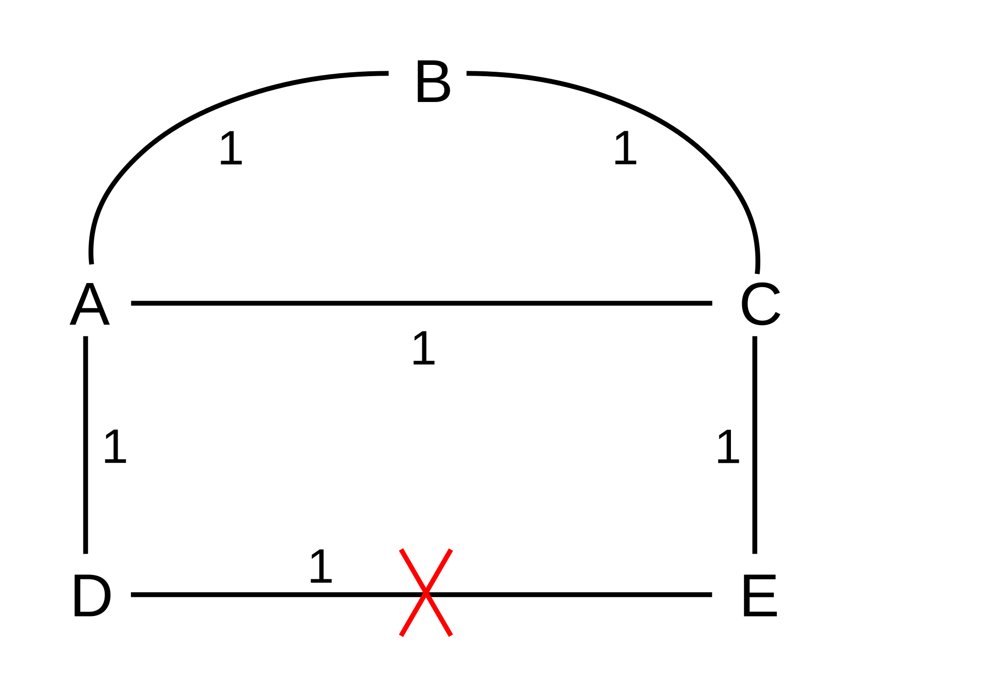
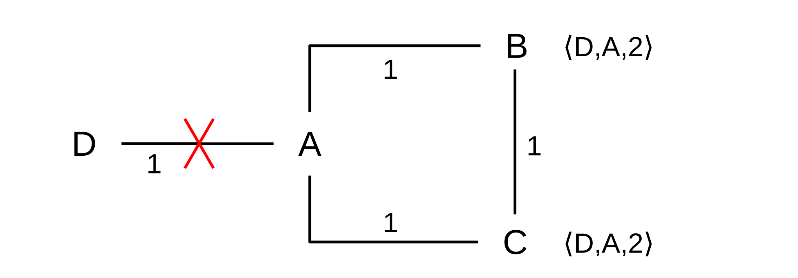
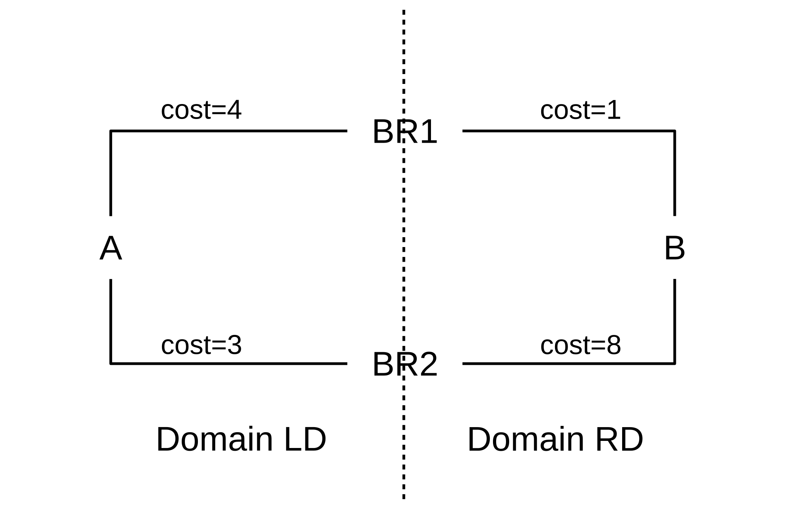
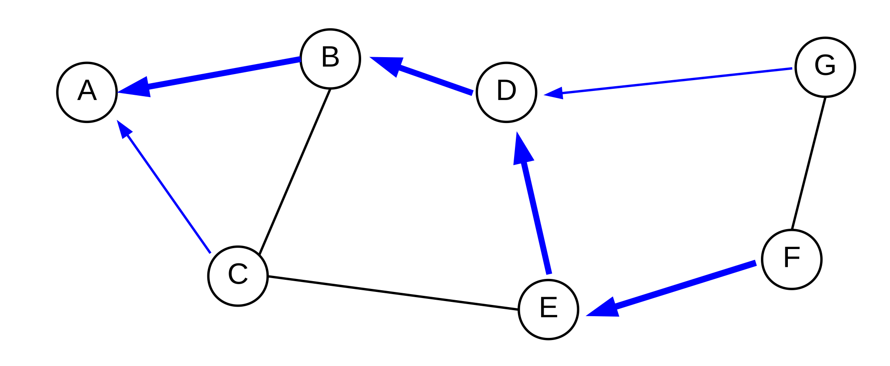
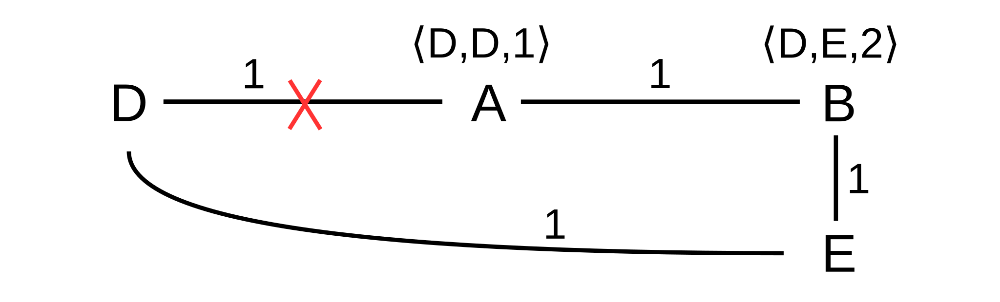

13 Routing-Update Algorithms¶
How do IP routers build and maintain their forwarding tables?
Ethernet bridges always have the option of fallback-to-flooding for unknown destinations, so they can afford to build their forwarding tables “incrementally”, putting a host into the forwarding table only when that host is first seen as a sender. For IP, there is no fallback delivery mechanism: forwarding tables must be built before delivery can succeed. While manual table construction is possible, it is not practical.
In the literature it is common to refer to router-table construction as “routing algorithms”. We will avoid that term, however, to avoid confusion with the fundamental datagram-forwarding algorithm; instead, we will call these “routing-update algorithms”.
The two classes of algorithms we will consider here are distance-vector and link-state. In the distance-vector approach, often used at smaller sites, routers exchange information with their immediately neighboring routers; tables are built up this way through a sequence of such periodic exchanges. In the link-state approach, routers rapidly propagate information about the state of each link; all routers in the organization receive this link-state information and each one uses it to build and maintain a map of the entire network. The forwarding table is then constructed (sometimes on demand) from this map.
Both approaches assume that consistent information is available as to the cost of each link (eg that the two routers at opposite ends of each link know this cost, and agree on how the cost is determined). This requirement classifies these algorithms as interior routing-update algorithms: the routers involved are internal to a larger organization or other common administrative regime that has an established policy on how to assign link weights. The set of routers following a common policy is known as a routing domain or (from the BGP protocol) an autonomous system.
The simplest link-weight strategy is to give each link a cost of 1; link costs can also be based on bandwidth, propagation delay, financial cost, or administrative preference value. Careful assignment of link costs often plays a major role in herding traffic onto the faster or “better” links.
In the following chapter we will look at the Border Gateway Protocol, or BGP, in which no link-cost calculations are made. BGP is used to select routes that traverse other organizations, and financial rather than technical factors may therefore play the dominant role in making routing choices.
Generally, all these algorithms apply to IPv6 as well as IPv4, though specific protocols of course may need modification.
Finally, we should point out that from the early days of the Internet, routing was allowed to depend not just on the destination, but also on the “quality of service” (QoS) requested; thus, forwarding table entries are strictly speaking not ⟨destination, next_hop⟩ but rather ⟨destination, QoS, next_hop⟩. Originally, the Type of Service field in the IPv4 header (9.1 The IPv4 Header) could be used to specify QoS (often then called ToS). Packets could request low delay, high throughput or high reliability, and could be routed accordingly. In practice, the Type of Service field was rarely used, and was eventually taken over by the DS field and ECN bits. The first three bits of the Type of Service field, known as the precedence bits, remain available, however, and can still be used for QoS routing purposes (see the Class Selector PHB of 25.7 Differentiated Services for examples of these bits). See also RFC 2386.
In much of the following, we are going to ignore QoS information, and assume that routing decisions are based only on the destination. See, however, the first paragraph of 13.5 Link-State Routing-Update Algorithm, and also 13.6 Routing on Other Attributes.
13.1 Distance-Vector Routing-Update Algorithm¶
Distance-vector is the simplest routing-update algorithm, used by the Routing Information Protocol, or RIP. Version 2 of the protocol is specified in RFC 2453.
Routers identify their router neighbors (through some sort of neighbor-discovery mechanism), and add a third column to their forwarding tables representing the total cost for delivery to the corresponding destination. These costs are the “distance” of the algorithm name. Forwarding-table entries are now of the form ⟨destination,next_hop,cost⟩.
Costs are administratively assigned to each link, and the algorithm then calculates the total cost to a destination as the sum of the link costs along the path. The simplest case is to assign a cost of 1 to each link, in which case the total cost to a destination will be the number of links to that destination. This is known as the “hopcount” metric; it is also possible to assign link costs that reflect each link’s bandwidth, or delay, or whatever else the network administrators wish. Thoughtful cost assignments are a form of traffic engineering and sometimes play a large role in network performance.
At this point, each router then reports the ⟨destination,cost⟩ portion of its table to its neighboring routers at regular intervals; these table portions are the “vectors” of the algorithm name. It does not matter if neighbors exchange reports at the same time, or even at the same rate.
Each router also monitors its continued connectivity to each neighbor; if neighbor N becomes unreachable then its reachability cost is set to infinity.
In a real IP network, actual destinations would be subnets attached to routers; one router might be directly connected to several such destinations. In the following, however, we will identify all a router’s directly connected subnets with the router itself. That is, we will build forwarding tables to reach every router. While it is possible that one destination subnet might be reachable by two or more routers, thus breaking our identification of a router with its set of attached subnets, in practice this is of little concern. See exercise 6.0 for an example in which subnets are not identified with adjacent routers.
In 30.5 IP Routers With Simple Distance-Vector Implementation we present a simplified working implementation of RIP using the Mininet network emulator.
13.1.1 Distance-Vector Update Rules¶
Let A be a router receiving a report ⟨D,cD⟩ from neighbor N at cost cN. Note that this means A can reach D via N with cost c = cD + cN. A updates its own table according to the following three rules:
- New destination: D is a previously unknown destination. A adds ⟨D,N,c⟩ to its forwarding table.
- Lower cost: D is a known destination with entry ⟨D,M,cold⟩, but the new total cost c is less than cold. A switches to the cheaper route, updating its entry for D to ⟨D,N,c⟩. It is possible that M=N, meaning that N is now reporting a cost decrease to D. (If c = cold, A ignores the new report; see exercise 8.0.)
- Next_hop increase: A has an existing entry ⟨D,N,cold⟩, and the new total cost c is greater than cold. Because this is a cost increase from the neighbor N that A is currently using to reach D, A must incorporate the increase in its table. A updates its entry for D to ⟨D,N,c⟩.
The first two rules are for new destinations and a shorter path to existing destinations. In these cases, the cost to each destination monotonically decreases (at least if we consider all unreachable destinations as being at cost ∞). Convergence is automatic, as the costs cannot decrease forever.
The third rule, however, introduces the possibility of instability, as a cost may also go up. It represents the bad-news case, in that neighbor N has learned that some link failure has driven up its own cost to reach D, and is now passing that “bad news” on to A, which routes to D via N.
The next_hop-increase case only passes bad news along; the very first cost increase must always come from a router discovering that a neighbor N is unreachable, and thus updating its cost to N to ∞. Similarly, if router A learns of a next_hop increase to destination D from neighbor B, then we can follow the next_hops back until we reach a router C which is either the originator of the cost=∞ report, or which has learned of an alternative route through one of the first two rules.
13.1.2 Example 1¶
For our first example, no links will break and thus only the first two rules above will be used. We will start out with the network below with empty forwarding tables; all link costs are 1.
After initial neighbor discovery, here are the forwarding tables. Each node has entries only for its directly connected neighbors:
A: ⟨B,B,1⟩ ⟨C,C,1⟩ ⟨D,D,1⟩B: ⟨A,A,1⟩ ⟨C,C,1⟩C: ⟨A,A,1⟩ ⟨B,B,1⟩ ⟨E,E,1⟩D: ⟨A,A,1⟩ ⟨E,E,1⟩E: ⟨C,C,1⟩ ⟨D,D,1⟩
Now let D report to A; it sends records ⟨A,1⟩ and ⟨E,1⟩. A ignores D’s ⟨A,1⟩ record, but ⟨E,1⟩ represents a new destination; A therefore adds ⟨E,D,2⟩ to its table. Similarly, let A now report to D, sending ⟨B,1⟩ ⟨C,1⟩ ⟨D,1⟩ ⟨E,2⟩ (the last is the record we just added). D ignores A’s records ⟨D,1⟩ and ⟨E,2⟩ but A’s records ⟨B,1⟩ and ⟨C,1⟩ cause D to create entries ⟨B,A,2⟩ and ⟨C,A,2⟩. A and D’s tables are now, in fact, complete.
Now suppose C reports to B; this gives B an entry ⟨E,C,2⟩. If C also reports to E, then E’s table will have ⟨A,C,2⟩ and ⟨B,C,2⟩. The tables are now:
A: ⟨B,B,1⟩ ⟨C,C,1⟩ ⟨D,D,1⟩ ⟨E,D,2⟩B: ⟨A,A,1⟩ ⟨C,C,1⟩ ⟨E,C,2⟩C: ⟨A,A,1⟩ ⟨B,B,1⟩ ⟨E,E,1⟩D: ⟨A,A,1⟩ ⟨E,E,1⟩ ⟨B,A,2⟩ ⟨C,A,2⟩E: ⟨C,C,1⟩ ⟨D,D,1⟩ ⟨A,C,2⟩ ⟨B,C,2⟩
We have two missing entries: B and C do not know how to reach D. If A reports to B and C, the tables will be complete; B and C will each reach D via A at cost 2. However, the following sequence of reports might also have occurred:
- E reports to C, causing C to add ⟨D,E,2⟩
- C reports to B, causing B to add ⟨D,C,3⟩
In this case we have 100% reachability but B routes to D via the longer-than-necessary path B–C–E–D. However, one more report will fix this: suppose A reports to B. B will received ⟨D,1⟩ from A, and will update its entry ⟨D,C,3⟩ to ⟨D,A,2⟩.
Note that A routes to E via D while E routes to A via C; this asymmetry was due to indeterminateness in the order of initial table exchanges.
If all link weights are 1, and if each pair of neighbors exchange tables once before any pair starts a second exchange, then the above process will discover the routes in order of length, ie the shortest paths will be the first to be discovered. This is not, however, a particularly important consideration.
13.1.3 Example 2¶
The next example illustrates link weights other than 1. The first route discovered between A and B is the direct route with cost 8; eventually we discover the longer A–C–D–B route with cost 2+1+3=6.
The initial tables are these:
A: ⟨C,C,2⟩ ⟨B,B,8⟩B: ⟨A,A,8⟩ ⟨D,D,3⟩C: ⟨A,A,2⟩ ⟨D,D,1⟩D: ⟨B,B,3⟩ ⟨C,C,1⟩
After A and C exchange, A has ⟨D,C,3⟩ and C has ⟨B,A,10⟩. After C and D exchange, C updates its ⟨B,A,10⟩ entry to ⟨B,D,4⟩ and D adds ⟨A,C,3⟩; D receives C’s report of ⟨B,10⟩ but ignores it.
Now finally suppose B and D exchange. D ignores B’s route to A, as it has a better one. B, however, gets D’s report ⟨A,3⟩ and updates its entry for A to ⟨A,D,6⟩. D also reports ⟨C,1⟩ and so B creates an entry ⟨C,D,4⟩ for C. At this point the tables are as follows:
A: ⟨C,C,2⟩ ⟨B,B,8⟩ ⟨D,C,3⟩B: ⟨A,D,6⟩ ⟨D,D,3⟩ ⟨C,D,4⟩C: ⟨A,A,2⟩ ⟨D,D,1⟩ ⟨B,D,4⟩D: ⟨B,B,3⟩ ⟨C,C,1⟩ ⟨A,C,3⟩
We have one more thing to fix before we are done: A has an inefficient route to B. This will be fixed when C reports ⟨B,4⟩ to A; A will replace its route to B with ⟨B,C,6⟩. If we look only at the A–B route, B discovers the lower-cost route to A when, first, C reports to D and, second, after that, D reports to B; a similar sequence leads to A’s discovering the lower-cost route.
13.1.4 Example 3¶
Our third example will illustrate how the algorithm proceeds when a link breaks. We return to the first diagram, with all tables completed, and then suppose the D–E link breaks. This is the “bad-news” case: a link has broken, and is no longer available; this will bring the third rule into play.

We shall assume, as above, that A reaches E via D, but we will here assume – contrary to Example 1 – that C reaches D via A (see exercise 5.0 for the original case).
Initially, upon discovering the break, D and E update their tables to ⟨E,-,∞⟩ and ⟨D,-,∞⟩ respectively (whether or not they actually enter ∞ into their tables is implementation-dependent; we may consider this as equivalent to removing their entries for one another; the “-” as next_hop indicates there is no next_hop).
Eventually D and E will report the break to their respective neighbors A and C. A will apply the “bad-news” rule above and update its entry for E to ⟨E,-,∞⟩. We have assumed that C, however, routes to D via A, and so it will ignore E’s report.
We will suppose that the next steps are for C to report to E and to A. When C reports its route ⟨D,2⟩ to E, E will add the entry ⟨D,C,3⟩, and will again be able to reach D. When C reports to A, A will add the route ⟨E,C,2⟩. The final step will be when A next reports to D, and D will have ⟨E,A,3⟩. Connectivity is restored.
13.1.5 Example 4¶
The previous examples have had a “global” perspective in that we looked at the entire network. In the next example, we look at how one specific router, R, responds when it receives a distance-vector report from its neighbor S. Neither R nor S nor we have any idea of what the entire network looks like. Suppose R’s table is initially as follows, and the S–R link has cost 1:
| destination | next_hop | cost |
|---|---|---|
| A | S | 3 |
| B | T | 4 |
| C | S | 5 |
| D | U | 6 |
S now sends R the following report, containing only destinations and its costs:
| destination | cost |
|---|---|
| A | 2 |
| B | 3 |
| C | 5 |
| D | 4 |
| E | 2 |
R then updates its table as follows:
| destination | next_hop | cost | reason |
|---|---|---|---|
| A | S | 3 | No change; S probably sent this report before |
| B | T | 4 | No change; R’s cost via S is tied with R’s cost via T |
| C | S | 6 | Next_hop increase |
| D | S | 5 | Lower-cost route via S |
| E | S | 3 | New destination |
Whatever S’s cost to a destination, R’s cost to that destination via S is one greater.
13.2 Distance-Vector Slow-Convergence Problem¶
There is a significant problem with distance-vector table updates in the presence of broken links. Not only can routing loops form, but the loops can persist indefinitely! As an example, suppose we have the following arrangement, with all links having cost 1:
Now suppose the D–A link breaks:
If A immediately reports to B that D is no longer reachable (cost = ∞), then all is well. However, it is possible that B reports to A first, telling A that it has a route to D, with cost 2, which B still believes it has.
This means A now installs the entry ⟨D,B,3⟩. At this point we have what we called in 1.6 Routing Loops a linear routing loop: if a packet is addressed to D, A will forward it to B and B will forward it back to A.
Worse, this loop will be with us a while. At some point A will report ⟨D,3⟩ to B, at which point B will update its entry to ⟨D,A,4⟩. Then B will report ⟨D,4⟩ to A, and A’s entry will be ⟨D,B,5⟩, etc. This process is known as slow convergence to infinity. If A and B each report to the other once a minute, it will take 2,000 years for the costs to overflow an ordinary 32-bit integer.
13.2.1 Slow-Convergence Fixes¶
The simplest fix to this problem is to use a small value for infinity. Most flavors of the RIP protocol use infinity=16, with updates every 30 seconds. The drawback to so small an infinity is that no path through the network can be longer than this; this makes paths with weighted link costs difficult. Cisco IGRP uses a variable value for infinity up to a maximum of 256; the default infinity is 100.
There are several well-known other fixes:
13.2.1.1 Split Horizon¶
Under split horizon, if A uses N as its next_hop for destination D, then A simply does not report to N that it can reach D; that is, in preparing its report to N it first deletes all entries that have N as next_hop. In the example above, split horizon would mean B would never report to A about the reachability of D because A is B’s next_hop to D.
Split horizon prevents all linear routing loops. However, there are other topologies where it cannot prevent loops. One is the following:

Suppose the A-D link breaks, and A updates to ⟨D,-,∞⟩. A then reports ⟨D,∞⟩ to B, which updates its table to ⟨D,-,∞⟩. But then, before A can also report ⟨D,∞⟩ to C, C reports ⟨D,2⟩ to B. B then updates to ⟨D,C,3⟩, and reports ⟨D,3⟩ back to A; neither this nor the previous report violates split-horizon. Now A’s entry is ⟨D,B,4⟩. Eventually A will report to C, at which point C’s entry becomes ⟨D,A,5⟩, and the numbers keep increasing as the reports circulate counterclockwise. The actual routing proceeds in the other direction, clockwise.
Split horizon often also includes poison reverse: if A uses N as its next_hop to D, then A in fact reports ⟨D,∞⟩ to N, which is a more definitive statement that A cannot reach D by itself. However, coming up with a scenario where poison reverse actually affects the outcome is not trivial.
13.2.1.2 Triggered Updates¶
In the original example, if A was first to report to B then the loop resolved immediately; the loop occurred if B was first to report to A. Nominally each outcome has probability 50%. Triggered updates means that any router should report immediately to its neighbors whenever it detects any change for the worse. If A reports first to B in the first example, the problem goes away. Similarly, in the second example, if A reports to both B and C before B or C report to one another, the problem goes away. There remains, however, a small window where B could send its report to A just as A has discovered the problem, before A can report to B.
13.2.1.3 Hold Down¶
Hold down is sort of a receiver-side version of triggered updates: the receiver does not use new alternative routes for a period of time (perhaps two router-update cycles) following discovery of unreachability. This gives time for bad news to arrive. In the first example, it would mean that when A received B’s report ⟨D,2⟩, it would set this aside. It would then report ⟨D,∞⟩ to B as usual, at which point B would now report ⟨D,∞⟩ back to A, at which point B’s earlier report ⟨D,2⟩ would be discarded. A significant drawback of hold down is that legitimate new routes are also delayed by the hold-down period.
These mechanisms for preventing slow convergence are, in the real world, quite effective. The Routing Information Protocol (RIP, RFC 2453) implements all but hold-down, and has been widely adopted at smaller installations.
However, the potential for routing loops and the limited value for infinity led to the development of alternatives. One alternative is the link-state strategy, 13.5 Link-State Routing-Update Algorithm. Another alternative is Cisco’s Enhanced Interior Gateway Routing Protocol, or EIGRP, 13.4.4 EIGRP. While part of the distance-vector family, EIGRP is provably loop-free, though to achieve this it must sometimes suspend forwarding to some destinations while tables are in flux.
13.3 Observations on Minimizing Route Cost¶
Does distance-vector routing actually achieve minimum costs? For that matter, does each packet incur the cost its sender expects? Suppose node A has a forwarding entry ⟨D,B,c⟩, meaning that A forwards packets to destination D via next_hop B, and expects the total cost to be c. If A sends a packet to D, and we follow it on the actual path it takes, must the total link cost be c? If so, we will say that the network has accurate costs.
The answer to the accurate-costs question, as it turns out, is yes for the distance-vector algorithm, if we follow the rules carefully, and the network is stable (meaning that no routing reports are changing, or, more concretely, that every update report now circulating is based on the current network state); a proof is below. However, if there is a routing loop, the answer is of course no: the actual cost is now infinite. The answer would also be no if A’s neighbor B has just switched to using a longer route to D than it last reported to A.
It turns out, however, that we seek the shortest route not because we are particularly trying to save money on transit costs; a route 50% longer would generally work just fine. (AT&T, back when they were the Phone Company, once ran a series of print advertisements claiming longer routes as a feature: if the direct path was congested, they could still complete your call by routing you the long way ‘round.) However, we are guaranteed that if all routers seek the shortest route – and if the network is stable – then all paths are loop-free, because in this case the network will have accurate costs.
Here is a simple example illustrating the importance of global cost-minimization in preventing loops. Suppose we have a network like this one:
Now suppose that A and B use distance-vector but are allowed to choose the shortest route to within 10%. A would get a report from C that D could be reached with cost 1, for a total cost of 21. The forwarding entry via C would be ⟨D,C,21⟩. Similarly, A would get a report from B that D could be reached with cost 21, for a total cost of 22: ⟨D,B,22⟩. Similarly, B has choices ⟨D,C,21⟩ and ⟨D,A,22⟩.
If A and B both choose the minimal route, no loop forms. But if A and B both use the 10%-overage rule, they would be allowed to choose the other route: A could choose ⟨D,B,22⟩ and B could choose ⟨D,A,22⟩. If this happened, we would have a routing loop: A would forward packets for D to B, and B would forward them right back to A.
As we apply distance-vector routing, each router independently builds its tables. A router might have some notion of the path its packets would take to their destination; for example, in the case above A might believe that with forwarding entry ⟨D,B,22⟩ its packets would take the path A–B–C–D (though in distance-vector routing, routers do not particularly worry about the big picture). Consider again the accurate-cost question above. This fails in the 10%-overage example, because the actual path is now infinite.
We now prove that, in distance-vector routing, the network will have accurate costs, provided
- each router selects what it believes to be the shortest path to the final destination, and
- the network is stable, meaning that further dissemination of any reports would not result in changes
To see this, suppose the actual route taken by some packet from source to destination, as determined by application of the distributed distance-vector algorithm, is longer than the cost calculated by the source. Choose an example of such a path with the fewest number of links, among all such paths in the network. Let S be the source, D the destination, and k the number of links in the actual path P. Let S’s forwarding entry for D be ⟨D,N,c⟩, where N is S’s next_hop neighbor.
To have obtained this route through the distance-vector algorithm, S must have received report ⟨D,cD⟩ from N, where we also have the cost of the S–N link as cN and c = cD + cN. If we follow a packet from N to D, it must take the same path P with the first link deleted; this sub-path has length k-1 and so, by our hypothesis that k was the length of the shortest path with non-accurate costs, the cost from N to D is cD. But this means that the cost along path P, from S to D via N, must be cD + cN = c, contradicting our selection of P as a path longer than its advertised cost.
There is one final observation to make about route costs: any cost-minimization can occur only within a single routing domain, where full information about all links is available. If a path traverses multiple routing domains, each separate routing domain may calculate the optimum path traversing that domain. But these “local minimums” do not necessarily add up to a globally minimal path length, particularly when one domain calculates the minimum cost from one of its routers only to the other domain rather than to a router within that other domain. Here is a simple example. Routers BR1 and BR2 are the border routers connecting the domain LD to the left of the vertical dotted line with domain RD to the right. From A to B, LD will choose the shortest path to RD (not to B, because LD is not likely to have information about links within RD). This is the path of length 3 through BR2. But this leads to a total path length of 3+8=11 from A to B; the global minimum path length, however, is 4+1=5, through BR1.

In this example, domains LD and RD join at two points. For a route across two domains joined at only a single point, the domain-local shortest paths do add up to the globally shortest path.
13.4 Loop-Free Distance Vector Algorithms¶
It is possible for routing-update algorithms based on the distance-vector idea to eliminate routing loops – and thus the slow-convergence problem – entirely. We present brief descriptions of two such algorithms.
13.4.1 DSDV¶
DSDV, or Destination-Sequenced Distance Vector, was proposed in [PB94]. It avoids routing loops by the introduction of sequence numbers: each router will always prefer routes with the most recent sequence number, and bad-news information will always have a lower sequence number then the next cycle of corrected information.
DSDV was originally proposed for MANETs (4.2.8 MANETs) and has some additional features for traffic minimization that, for simplicity, we ignore here. It is perhaps best suited for wired networks and for small, relatively stable MANETs.
DSDV forwarding tables contain entries for every other reachable node in the system. One successor of DSDV, Ad Hoc On-Demand Distance Vector routing or AODV, 13.4.2 AODV, allows forwarding tables to contain only those destinations in active use; a mechanism is provided for discovery of routes to newly active destinations.
Under DSDV, each forwarding table entry contains, in addition to the destination, cost and next_hop, the current sequence number for that destination. When neighboring nodes exchange their distance-vector reachability reports, the reports include these per-destination sequence numbers.
When a router R receives a report from neighbor N for destination D, and the report contains a sequence number larger than the sequence number for D currently in R’s forwarding table, then R always updates to use the new information. The three cost-minimization rules of 13.1.1 Distance-Vector Update Rules above are used only when the incoming and existing sequence numbers are equal.
Each time a router R sends a report to its neighbors, it includes a new value for its own sequence number, which it always increments by 2. This number is then entered into each neighbor’s forwarding-table entry for R, and is then propagated throughout the network via continuing report exchanges. Any sequence number originating this way will be even, and whenever another node’s forwarding-table sequence number for R is even, then its cost for R will be finite.
Infinite-cost reports are generated in the usual way when former neighbors discover they can no longer reach one another; however, in this case each node increments the sequence number for its former neighbor by 1, thus generating an odd value. Any forwarding-table entry with infinite cost will thus always have an odd sequence number. If A and B are neighbors, and A’s current sequence number is s, and the A–B link breaks, then B will start reporting A at cost ∞ with sequence number s+1 while A will start reporting its own new sequence number s+2. Any other node now receiving a report originating with B (with sequence number s+1) will mark A as having cost ∞, but will obtain a valid route to A upon receiving a report originating from A with new (and larger) sequence number s+2.
The triggered-update mechanism is used: if a node receives a report with some destinations newly marked with infinite cost, it will in turn forward this information immediately to its other neighbors, and so on. This is, however, not essential; “bad” and “good” reports are distinguished by sequence number, not by relative arrival time.
It is now straightforward to verify that the slow-convergence problem is solved. After a link break, if there is some alternative path from router R to destination D, then R will eventually receive D’s latest even sequence number, which will be greater than any sequence number associated with any report listing D as unreachable. If, on the other hand, the break partitioned the network and there is no longer any path to D from R, then the highest sequence number circulating in R’s half of the original network will be odd and the associated table entries will all list D at cost ∞. One way or another, the network will quickly settle down to a state where every destination’s reachability is accurately described.
In fact, a stronger statement is true: not even transient routing loops are created. We outline a proof. First, whenever router R has next_hop N for a destination D, then N’s sequence number for D must be greater than or equal to R’s, as R must have obtained its current route to D from one of N’s reports. A consequence is that all routers participating in a loop for destination D must have the same (even) sequence number s for D throughout. This means that the loop would have been created if only the reports with sequence number s were circulating. As we noted in 13.1.1 Distance-Vector Update Rules, any application of the next_hop-increase rule must trace back to a broken link, and thus must involve an odd sequence number. Thus, the loop must have formed from the sequence-number-s reports by the application of the first two rules only. But this violates the claim in Exercise 10.0.
There is one drawback to DSDV: nodes may sometimes briefly switch to routes that are longer than optimum (though still correct). This is because a router is required to use the route with the newest sequence number, even if that route is longer than the existing route. If A and B are two neighbors of router R, and B is closer to destination D but slower to report, then every time D’s sequence number is incremented R will receive A’s longer route first, and switch to using it, and B’s shorter route shortly thereafter.
DSDV implementations usually address this by having each router R keep track of the time interval between the first arrival at R of a new route to a destination D with a given sequence number, and the arrival of the best route with that sequence number. During this interval following the arrival of the first report with a new sequence number, R will use the new route, but will refrain from including the route in the reports it sends to its neighbors, anticipating that a better route will soon arrive.
This works best when the hopcount cost metric is being used, because in this case the best route is likely to arrive first (as the news had to travel the fewest hops), and at the very least will arrive soon after the first route. However, if the network’s cost metric is unrelated to the hop count, then the time interval between first-route and best-route arrivals can involve multiple update cycles, and can be substantial.
13.4.2 AODV¶
AODV, or Ad-hoc On-demand Distance Vector routing, is another routing mechanism often proposed for MANETs, though it is suitable for some wired networks as well. Unlike DSDV, above, AODV messages circulate only if a link breaks, or when a node is looking for a route to some other node; this second case is the rationale for the “on-demand” in the name. For larger MANETs, this may result in a significant reduction in routing-management traffic. AODV is described in [PR99] and RFC 3561.
The “ad hoc” in the name was intended to suggest that the protocol is well-suited for mobile nodes forming an ad hoc network (4.2.4 Access Points). It is, but the protocol is also works well with infrastructure (those with access points) Wi-Fi networks.
AODV has three kinds of messages: RouteRequest or RREQ, for nodes that are looking for a path to a destination, RouteReply or RREP, as the response, and RouteError or RERR for the reporting of broken links.
AODV performs reasonably well for MANETs in which the nodes are highly mobile, though it does assume all routing nodes are trustworthy.
AODV is loop-free, due to the way it uses sequence numbers. However, it does not always find the shortest route right away, and may in fact not find the shortest route for an arbitrarily long interval.
Each AODV node maintains a node sequence number and also a broadcast counter. Every routing message contains a sequence number for the destination, and every routing record kept by a node includes a field for the destination’s sequence number. Copies of a node’s sequence number held by other nodes may not be the most current; however, nodes always discard routes with an older (smaller) sequence number as soon as they hear about a route with a newer sequence number.
AODV nodes also keep track of other nodes that are directly reachable; in the diagram below we will assume these are the nodes connected by a line.
If node A wishes to find a route to node F, as in the diagram below, the first step is for A to increment its sequence number and send out a RouteRequest. This message contains the addresses of A and F, A’s just-incremented sequence number, the highest sequence number of any previous route to F that is known to A (if any), a hopcount field set initially to 1, and A’s broadcast counter. The end result should be a route from A to F, entered at each node along the path, and also a return route from F back to A.
The RouteRequest is sent initially to A’s direct neighbors, B and C in the diagram above, using UDP. We will assume for the moment that the RouteRequest reaches all the way to F before a RouteReply is generated. This is always the case if the “destination only” flag is set, though if not then it is possible for an intermediate node to generate the RouteReply.
A node that receives a RouteRequest must flood it (“broadcast” it) out all its interfaces to all its directly reachable neighbors, after incrementing the hopcount field. B therefore sends A’s message to C and D, and C sends it to B and E. For this example, we will assume that C is a bit slow sending the message to E.
Each node receiving a RouteRequest must hang on to it for a short interval (typically 3 seconds). During this period, if it sees a duplicate of the RouteRequest, identified by having the same source and the same broadcast counter, it discards it. This discard rule ensures that RouteRequest messages do not circulate endlessly around loops; it may be compared to the reliable-flooding algorithm in 13.5 Link-State Routing-Update Algorithm.
A node receiving a new RouteRequest also records (or updates) a routing-table entry for reaching the source of the RouteRequest. Unless there was a pre-existing newer route (that is, with larger sequence number), the entry is marked with the sequence number contained in the message, and with next_hop the neighbor from which the RouteRequest was received. This process ensures that, as part of each node’s processing of a RouteRequest message, it installs a return route back to the originator.
We will suppose that the following happen in the order indicated:
- B forwards the RouteRequest to D*
- D forwards the RouteRequest to E and G
- C forwards the RouteRequest to E
- E forwards the RouteRequest to F
Because E receives D’s copy of the RouteRequest first, it ignores C’s copy. This will mean that, at least initially, the return path will be longer than necessary. Variants of AODV (such as HWMP below) sometimes allow E to accept C’s message on the grounds that C has a shorter path back to A. This does mean that initial RouteRequest messages farther on in the network now have incorrect hopcount values, though these will be corrected by later RouteRequest messages.
After the above messages have been received, each node has a path back to A as indicated by the blue arrows below:

F now increments its own sequence number and creates a RouteReply message; F then sends it to A by following the highlighted (unicast) arrows above, F→E→D→B→A. As each node on the path processes the message, it creates (or updates) its route to the final destination, F; the return route to A had been created earlier when the node processed the corresponding RouteRequest.
At this point, A and F can communicate bidirectionally. (Each RouteRequest is acknowledged to ensure bidirectionality of each individual link.)
This F→E→D→B→A is longer than necessary; a shorter path is F→E→C→A. The shorter path will be adopted if, at some future point, E learns that E→C→A is a better path, though there is no mechanism to seek out this route.
If the “destination only” flag were not set, any intermediate node reached by the RouteRequest flooding could have answered with a route to F, if it had one. Such a node would generate the RouteReply on its own, without involving F. The sequence number of the intermediate node’s route to F must be greater than the sequence number in the RouteRequest message.
If two neighboring nodes can no longer reach one another, each sends out a RouteError message, to invalidate the route. Nodes keep track of what routes pass through them, for just this purpose. One node’s message will reach the source and the other’s the destination, at which point the route is invalidated.
In larger networks, it is standard for the originator of a RouteRequest to set the IPv4 header TTL value (or the IPv6 Hop_Limit) to a smallish value (RFC 3561 recommends an intial value of 1) to limit the scope of the RequestRoute messages. If no answer is received, the originator tries again, with a slightly larger TTL value. In a large network, this reduces the volume of RouteRequest messages that have gone too far and therefore cannot be of use in finding a route.
AODV cannot form even short-term loops. To show this, we start with the observation that whenever a ⟨destination,next_hop⟩ forwarding entry installed at a node, due either to a RouteRequest or to a RouteReply, the next_hop is always the node from which the RouteRequest or RouteReply was received, and therefore the destination sequence number cannot get smaller as we move from the original node to its next_hop. That is, as we follow any route to a destination, the destination sequence numbers are nondecreasing. It immediately follows that, for a routing loop, the destination sequence number is constant along the loop. This means that each node on the route must have heard of the route via the same RouteRequest or RouteReply message, as forwarded.
The second observation, completing the argument, is that the hopcount field must strictly decrease as we travel along the route to the destination; the processing rules for RouteRequests and RouteReplies mean that each node installs a hopcount of one more than that of the neighboring node from which the route was received. This is impossible for a route that returns to the same node.
13.4.3 HWMP¶
The Hybrid Wireless Mesh Protocol is based on AODV, and has been chosen for the IEEE 802.11s Wi-Fi mesh networking standard (4.2.4.4 Mesh Networks). In the discussion here, we will assume HWMP is being used in a Wi-Fi network, though the protocol applies to any type of network. A set of nodes is designated as the routing (or forwarding) nodes; ordinary Wi-Fi stations may or may not be included here.
HWMP replaces the hopcount metric used in AODV with an “airtime link metric” which decreases as the link throughput increases and as the link error rate decreases. This encourages the use of higher-quality wireless links.
HWMP has two route-generating modes: an on-demand mode very similar to AODV, and a proactive mode used when there is at least one identified “root” node that connects to the Internet. In this case, the route-generating protocol determines a loop-free subset of the relevant routing links (that is, a spanning tree) by which each routing node can reach the root (or one of the roots). This tree-building process does not attempt to find best paths between pairs of non-root nodes, though such nodes can use the on-demand mode as necessary.
In the first, on-demand, mode, HWMP implements a change to classic AODV in that if a node receives a RouteRequest message and then later receives a second RouteRequest message with the same sequence number but a lower-cost route, then the second route replaces the first.
In the proactive mode, the designated root node – typically the node with wired Internet access – periodically sends out specially marked RouteRequest messages. These are sent to the broadcast address, rather than to any specific destination, but otherwise propagate in the usual way. Routing nodes receiving two copies from two different neighbors pick the one with the shortest path. Once this process stabilizes, each routing node knows the best path to the root (or to a root); the fact that each routing node chooses the best path from among all RouteRequest messages received ensures eventual route optimality. Routing nodes that have traffic to send can at any time generate a RouteReply, which will immediately set up a reverse route from the root to the node in question. Finally, reversing each link to the root allows the root to send broadcast messages.
HWMP has yet another mode: the root nodes can send out RootAnnounce (RANN) messages. These let other routing nodes know what the root is, but are not meant to result in the creation of routes to the root.
13.4.4 EIGRP¶
EIGRP, or the Enhanced Interior Gateway Routing Protocol, is a once-proprietary Cisco distance-vector protocol that was released as an Internet Draft in February 2013. As with DSDV, it eliminates the risk of routing loops, even ephemeral ones. It is based on the “distributed update algorithm” (DUAL) of [JG93]. EIGRP is an actual protocol; we present here only the general algorithm. Our discussion follows [CH99].
Each router R keeps a list of neighbor routers NR, as with any distance-vector algorithm. Each R also maintains a data structure known (somewhat misleadingly) as its topology table. It contains, for each destination D and each N in NR, an indication of whether N has reported the ability to reach D and, if so, the reported cost c(D,N). The router also keeps, for each N in NR, the cost cN of the link from R to N. Finally, the forwarding-table entry for any destination can be marked “passive”, meaning safe to use, or “active”, meaning updates are in process and the route is temporarily unavailable.
Initially, we expect that for each router R and each destination D, R’s next_hop to D in its forwarding table is the neighbor N for which the following total cost is a minimum:
c(D,N) + cN
Now suppose R receives a distance-vector report from neighbor N1 that it can reach D with cost c(D,N1). This is processed in the usual distance-vector way, unless it represents an increased cost and N1 is R’s next_hop to D; this is the third case in 13.1.1 Distance-Vector Update Rules. In this case, let C be R’s current cost to D, and let us say that neighbor N of R is a feasible next_hop (feasible successor in Cisco’s terminology) if N’s cost to D (that is, c(D,N)) is strictly less than C. R then updates its route to D to use the feasible neighbor N for which c(D,N) + cN is a minimum. Note that this may not in fact be the shortest path; it is possible that there is another neighbor M for which c(D,M)+cM is smaller, but c(D,M)≥C. However, because N’s path to D is loop-free, and because c(D,N) < C, this new path through N must also be loop-free; this is sometimes summarized by the statement “one cannot create a loop by adopting a shorter route”.
If no neighbor N of R is feasible – which would be the case in the D—A—B example of 13.2 Distance-Vector Slow-Convergence Problem, then R invokes the “DUAL” algorithm. This is sometimes called a “diffusion” algorithm as it invokes a diffusion-like spread of table changes proceeding away from R.
Let C in this case denote the new cost from R to D as based on N1’s report. R marks destination D as “active” (which suppresses forwarding to D) and sends a special query to each of its neighbors, in the form of a distance-vector report indicating that its cost to D has now increased to C. The algorithm terminates when all R’s neighbors reply back with their own distance-vector reports; at that point R marks its entry for D as “passive” again.
Some neighbors may be able to process R’s report without further diffusion to other nodes, remain “passive”, and reply back to R immediately. However, other neighbors may, like R, now become “active” and continue the DUAL algorithm. In the process, R may receive other queries that elicit its distance-vector report; as long as R is “active” it will report its cost to D as C. We omit the argument that this process – and thus the network – must eventually converge.
13.5 Link-State Routing-Update Algorithm¶
Link-state routing is an alternative to distance-vector. It is often – though certainly not always – considered to be the routing-update algorithm class of choice for networks that are “sufficiently large”, such as those of ISPs. There are two specific link-state protocols: the IETF’s Open Shortest Path First (OSPF, RFC 2328), and OSI’s Intermediate Systems to Intermediate Systems (IS-IS, documented unofficially in RFC 1142).
In distance-vector routing, each node knows a bare minimum of network topology: it knows nothing about links beyond those to its immediate neighbors. In the link-state approach, each node keeps a maximum amount of network information: a full map of all nodes and all links. Routes are then computed locally from this map, using the shortest-path-first algorithm. The existence of this map allows, in theory, the calculation of different routes for different quality-of-service requirements. The map also allows calculation of a new route as soon as news of the failure of the existing route arrives; distance-vector protocols on the other hand must wait for news of a new route after an existing route fails.
Link-state protocols distribute network map information through a modified form of broadcast of the status of each individual link. Whenever either side of a link notices the link has died (or if a node notices that a new link has become available), it sends out link-state packets (LSPs) that “flood” the network. This broadcast process is called reliable flooding. In general, broadcast mechanisms are not compatible with networks that have topological looping (that is, redundant paths); broadcast packets may circulate around the loop endlessly. Link-state protocols must be carefully designed to ensure that both every router sees every LSP, and also that no LSPs circulate repeatedly. (The acronym LSP is used by IS-IS; the preferred acronym used by OSPF is LSA, where A is for advertisement.) LSPs are sent immediately upon link-state changes, like triggered updates in distance-vector protocols except there is no “race” between “bad news” and “good news”.
It is possible for ephemeral routing loops to exist; for example, if one router has received a LSP but another has not, they may have an inconsistent view of the network and thus route to one another. However, as soon as the LSP has reached all routers involved, the loop should vanish. There are no “race conditions”, as with distance-vector routing, that can lead to persistent routing loops.
The link-state flooding algorithm avoids the usual problems of broadcast in the presence of loops by having each node keep a database of all LSP messages. The originator of each LSP includes its identity, information about the link that has changed status, and also a sequence number. Other routers need only keep in their databases the LSP packet with the largest sequence number; older LSPs can be discarded. When a router receives a LSP, it first checks its database to see if that LSP is old, or is current but has been received before; in these cases, no further action is taken. If, however, an LSP arrives with a sequence number not seen before, then in typical broadcast fashion the LSP is retransmitted over all links except the arrival interface.
As an example, consider the following arrangement of routers:
Suppose the A–E link status changes. A sends LSPs to C and B. Both these will forward the LSPs to D; suppose B’s arrives first. Then D will forward the LSP to C; the LSP traveling C→D and the LSP traveling D→C might even cross on the wire. D will ignore the second LSP copy that it receives from C and C will ignore the second copy it receives from D.
It is important that LSP sequence numbers not wrap around. (Protocols that do allow a numeric field to wrap around usually have a clear-cut idea of the “active range” that can be used to conclude that the numbering has wrapped rather than restarted; this is harder to do in the link-state context.) OSPF uses lollipop sequence-numbering here: sequence numbers begin at -231 and increment to 231-1. At this point they wrap around back to 0. Thus, as long as a sequence number is less than zero, it is guaranteed unique; at the same time, routing will not cease if more than 231 updates are needed. Other link-state implementations use 64-bit sequence numbers.
Actual link-state implementations often give link-state records a maximum lifetime; entries must be periodically renewed.
13.5.1 Shortest-Path-First Algorithm¶
The next step is to compute routes from the network map, using the shortest-path-first (SPF) algorithm. This algorithm computes shortest paths from a given node, A in the example here, to all other nodes. Below is our example network; we are interested in the shortest paths from A to B, C and D.
Before starting the algorithm, we note the shortest path from A to D is A-B-C-D, which has cost 3+4+2=9.
The algorithm builds the set R of all shortest-path routes iteratively. Initially, R contains only the 0-length route to the start node; one new destination and route is added to R at each stage of the iteration. At each stage we have a current node, representing the node most recently added to R. The initial current node is our starting node, in this case, A.
We will also maintain a set T, for tentative, of routes to other destinations. This is also initialized to empty.
At each stage, we find all nodes which are immediate neighbors of the current node and which do not already have routes in the set R. For each such node N, we calculate the cost of the route from the start node to N that goes through the current node. We see if this is our first route to N, or if the route improves on any route to N already in T; if so, we add or update the route in T accordingly. Doing this, the routes will be discovered in order of increasing (or nondecreasing) cost.
At the end of this process, we choose the shortest path in T, and move the route and destination node to R. The destination node of this shortest path becomes the next current node. Ties can be resolved arbitrarily, but note that, as with distance-vector routing, we must choose the minimum or else the accurate-costs property will fail.
We repeat this process until all nodes have routes in the set R.
For the example above, we start with current = A and R = {⟨A,A,0⟩}. The set T will be {⟨B,B,3⟩, ⟨C,C,10⟩, ⟨D,D,11⟩}. The lowest-cost entry is ⟨B,B,3⟩, so we move that to R and continue with current = B. No path through C or D can possibly have lower cost.
For the next stage, the neighbors of B without routes in R are C and D; the routes from A to these through B are ⟨C,B,7⟩ and ⟨D,B,12⟩. The former is an improvement on the existing T entry ⟨C,C,10⟩ and so replaces it; the latter is not an improvement over ⟨D,D,11⟩. T is now {⟨C,B,7⟩, ⟨D,D,11⟩}. The lowest-cost route in T is that to C, so we move this node and route to R and set C to be current.
Again, ⟨C,B,7⟩ must be the shortest path to C. If any lower-cost path to C existed, then we would be selecting that shorter path – or a prefix of it – at this point, instead of the ⟨C,B,7⟩ path; see the proof below.
For the next stage, D is the only non-R neighbor; the path from A to D via C has entry ⟨D,B,9⟩, an improvement over the existing ⟨D,D,11⟩ in T. The only entry in T is now ⟨D,B,9⟩; this has the lowest cost and thus we move it to R.
We now have routes in R to all nodes, and are done.
Here is another example, again with links labeled with costs:
We start with current = A. At the end of the first stage, ⟨B,B,3⟩ is moved into R, T is {⟨D,D,8⟩}, and current is B. The second stage adds ⟨C,B,5⟩ to T, and then moves this to R; current then becomes C. The third stage introduces the route (from A) ⟨D,B,6⟩; this is an improvement over ⟨D,D,8⟩ and so replaces it in T; at the end of the stage this route to D is moved to R.
In both the examples above, the current nodes progressed along a path, A→B→C→D. This is not generally the case; here is a similar example but with different lengths in which current jumps from B to D:

As in the previous example, at the end of the first stage ⟨B,B,3⟩ is moved into R, with T = {⟨D,D,4⟩}, and B becomes current. The second stage adds ⟨C,B,6⟩ to T. However, the shortest path in T is now ⟨D,D,4⟩, and so it is D that becomes the next current. The final stage replaces ⟨C,B,6⟩ in T with ⟨C,D,5⟩. At that point this route is added to R and the algorithm is completed.
Proof that SPF paths are shortest: suppose, by contradiction, that, for some node, a shorter path exists than the one generated by SPF. Let A be the start node, and let U be the first node generated for which the SPF path is not shortest. Let T be the Tentative set and let R be the set of completed routes at the point when we choose U as current, and let d be the cost of the new route to U. Let P = ⟨A,…,X,Y,…,U⟩ be the shorter path to U, with cost c<d, where Y is the first node along the path not to have a route in R (it is possible Y=U).
At some strictly earlier stage in the algorithm, we must have added a route to node X, as the route to X is in R. In the following stage, we would have included the prefix ⟨A,…,X,Y⟩ of P in Tentative. This path to Y has cost ≤c. This route must still be in T at the point we chose U as current, as there is no route to Y in R, but this means we should instead have chosen Y as current, contradicting the choice of U.
A link-state source node S computes the entire path to a destination D (in fact it computes the path to every destination). But as far as the actual path that a packet sent by S will take to D, S has direct control only as far as the first hop N. While the accurate-cost rule we considered in distance-vector routing will still hold, the actual path taken by the packet may differ from the path computed at the source, in the presence of alternative paths of the same length. For example, S may calculate a path S–N–A–D, and yet a packet may take path S–N–B–D, so long as the N–A–D and N–B–D paths have the same length.
Link-state routing allows calculation of routes on demand (results are then cached), or larger-scale calculation. Link-state also allows routes calculated with quality-of-service taken into account, via straightforward extension of the algorithm above.
Because the starting node is fixed, the shortest-path-first algorithm can be classified as a single-source approach. If the goal is to compute the shortest paths between all pairs of nodes in a network, the Floyd-Warshall algorithm is an alternative, with slightly better performance in networks with large numbers of links.
13.6 Routing on Other Attributes¶
There is sometimes a desire to route on packet attributes other than the destination, or the destination and QoS bits. For example, we might want to route packets based in part on the packet source, or on the TCP port number. This kind of routing is decidedly nonstandard, though it is often available, and often an important component of traffic engineering.
This option is often known as policy-based routing, because packets are routed according to attributes specified by local administrative policy. (This term should not be confused with BGP routing policy (15 Border Gateway Protocol (BGP)), which means something quite different.)
Policy-based routing is not used frequently, but one routing decision of this type can have far-reaching effects. If an ISP wishes to route customer voice traffic differently from customer data traffic, for example, it need only apply policy-based routing to classify traffic at the point of entry, and send the voice traffic to its own router. After that, ordinary routers on the voice path and on the separate data path can continue the forwarding without using policy-based methods.
Sometimes policy-based routing is used to mark packets for special processing; this might mean different routing further downstream or it might mean being sent along the same path as the other traffic but with preferential treatment. For two packet-marking strategies, see 25.7 Differentiated Services and 25.12 Multi-Protocol Label Switching (MPLS).
On Linux systems policy-based routing is part of the Linux Advanced Routing facility, often grouped with some advanced queuing features known as Traffic Control; the combination is referred to as LARTC.
As a simple example of what can be done, suppose a site has two links L1 and L2 to the Internet, with L1 the default route to the Internet. Perhaps L1 is faster and L2 serves more as a backup; perhaps L2 has been added to increase outbound capacity. A site may wish to route some outbound traffic via L2 for any of the following reasons:
- the traffic may involve protocols deemed lower in priority (eg email)
- the traffic may be real-time traffic that can benefit from reduced competition on L2
- the traffic may come from lower-priority senders; eg some customers within the site may be relegated to using L2 because they are paying less
- a few large-volume elephant flows may be offloaded from L1 to L2
In the first two cases, routing might be based on the destination port numbers; in the third, it might be based on the source IP address. In the fourth case, a site’s classification of its elephant flows may have accumulated over time.
Note that nothing can be done in the inbound direction unless L1 and L2 lead to the same ISP, and even there any special routing would be at the discretion of that ISP.
The trick with LARTC is to be compatible with existing routing-update protocols; this would be a problem if the kernel forwarding table simply added columns for other packet attributes that neighboring non-LARTC routers knew nothing about. Instead, the forwarding table is split up into multiple ⟨dest, next_hop⟩ (or ⟨dest, QoS, next_hop⟩) tables. One of these tables is the main table, and is the table that is updated by routing-update protocols interacting with neighbors. Before a packet is forwarded, administratively supplied rules are consulted to determine which table to apply; these rules are allowed to consult other packet attributes. The collection of tables and rules is known as the routing policy database.
As a simple example, in the situation above the main table would have an entry ⟨default, L1⟩ (more precisely, it would have the IP address of the far end of the L1 link instead of L1 itself). There would also be another table, perhaps named slow, with a single entry ⟨default, L2⟩. If a rule is created to have a packet routed using the “slow” table, then that packet will be forwarded via L2. Here is one such Linux rule, which causes all traffic from host 10.0.0.17 to be routed using table “slow”:
ip rule add from 10.0.0.17 table slow
Now suppose we want to route traffic to port 25 (the SMTP port) via L2. This is harder; Linux provides no support here for routing based on port numbers. However, we can instead use the iptables mechanism to “mark” all packets destined for port 25, and then create a routing-policy rule to have such marked traffic use the slow table. The mark is known as the forwarding mark, or fwmark; its value is 0 by default. The fwmark is not actually part of the packet; it is associated with the packet only while the latter remains within the kernel.
iptables --table mangle --append PREROUTING \\
--protocol tcp --dport 25 --jump MARK --set-mark 1
ip rule add fwmark 1 table slow
Consult the applicable man pages for further details.
The iptables mechanism can also be used to set the appropriate QoS bits – the IPv4 DS bits (9.1 The IPv4 Header) or the IPv6 Traffic Class bits (11.1 The IPv6 Header) – so that a single standard IP forwarding table can be used, though support for the IPv4 QoS bits is limited.
Linux actually maintains a numbered set of up to 255 tables; the main table is number 254. These associations between numbers and table names are stored in /etc/iproute2/rt_tables. If we want a table named “slow” then we have to give it a number in this file, perhaps with an entry
100 slow
(Alternatively, it is possible to replace the name “slow” in the earlier commands with the number.)
13.6.1 Reverse-Path Filtering¶
There is one other issue we must deal with to build a working example from the fragments above. When a packet arrives at a router, a feature called reverse-path filtering will prevent forwarding the packet if the router does not have a forwarding entry that would forward the source address back out the interface by which the packet just arrived; that is, if the router knows it won’t be able to route reply packets properly, it won’t forward the original packet. This is very commonly implemented, and is meant to prevent spoofing. If an ISP, for example, has IP address block 200.1.0.0/16, then reverse-path filtering will prevent miscreant ISP customers from sending out packets with “spoofed” source addresses not in this block. If every ISP implemented this feature, certain malicious attacks such as SYN flooding (17.3 TCP Connection Establishment) would be much harder.
But for the router above with the two paths L1 and L2, reverse-path filtering must be disabled. Suppose this router is R, and let D be the destinaton that the “slow” path is being set up to reach. R will have a “normal” (perhaps default) route to reach D via L1. The point of policy-based routing is so packets to D will be routed using the other, “slow” path, over L2. But with reverse-path filtering in place the router will detect that return packets from D, arriving via L2, have a source address that does not get forwarded back over L2, because the return packets don’t match the routing-policy rule. So, unless reverse-path-filtering is disabled, R will drop these return packets. Packets to D will be delivered, but all D’s replies will be lost.
On Linux systems, the files in the directory /proc/sys/net/ipv4/conf determine the status of reverse-path filtering. This directory contains a subdirectory for each interface, plus default. Each subdirectory contains, among other things, a file rp_filter; if this file contains a 0, reverse-path filtering is off, while a value of 1 enables it. A value of 2 enables “loose reverse-path filtering”, in that a packet is forwarded if there is some interface – not necessarily the arrival interface – by which the router can reach the source address.
13.7 ECMP¶
Equal-Cost MultiPath routing, or ECMP, is a technique for combining two (or more) routes to a destination into a single unit, so that traffic to that destination is distributed (not necessarily equally) among the routes. ECMP is supported by EIGRP (13.4.4 EIGRP) and the link-state implementations OSPF and IS-IS (13.5 Link-State Routing-Update Algorithm). At the Ethernet level, ECMP is supported in spirit (if not in name) by TRILL and SPB (3.3 TRILL and SPB). It is also supported by BGP (15 Border Gateway Protocol (BGP)) for inter-AS routing.
A simpler alternative to ECMP is channel bonding, also known as link aggregation, and often based on the IEEE 802.3ad standard. In channel bonding, two parallel Ethernet links are treated as a single unit. In many cases it is simpler and cheaper to bond two or three 1 Gbps Ethernet links than to upgrade everything to support 10 Gbps. Channel bonding applies, however, in limited circumstances; for example, the two channels must both be Ethernet, and must represent a single link.
In the absence of channel bonding, equal-cost does not necessarily mean equal-propagation-delay. Even for two short parallel links, queuing delays on one link may mean that packet delivery order is not preserved. As TCP usually interprets out-of-order packet delivery as evidence of packet loss (19.3 TCP Tahoe and Fast Retransmit), this can lead to large numbers of spurious retransmissions. For this reason, ECMP is almost always configured to send all the packets of any one TCP connection over just one of the links (as determined by a hash function); some channel-bonding implementations do the same, in fact. A consequence is that ECMP configured this way must see a large number of parallel TCP connections in order to utilize all participating paths reasonably equally. In special cases, however, it may be practical to configure ECMP to alternate between the paths on a per-packet basis, using round-robin transmission; this approach has the potential to achieve much better load-balancing between the paths.
In terms of routing-update protocols, ECMP can be viewed as allowing two (or more) next_hop values, each with the same cost, to be associated with the same destination.
See 30.9.4 multitrunk.py for an example of the use of software-defined networking to have multiple TCP connections take different paths to the same destination, in a way similar to the ECMP approach.
13.8 Epilog¶
At this point we have concluded the basics of IP routing, involving routing within large (relatively) homogeneous organizations such as multi-site corporations or Internet Service Providers. Every router involved must agree to run the same protocol, and must agree to a uniform assignment of link costs.
At the very largest scales, these requirements are impractical. The next chapter is devoted to this issue of very-large-scale IP routing, eg on the global Internet.
13.9 Exercises¶
Exercises may be given fractional (floating point) numbers, to allow for interpolation of new exercises. Exercises marked with a ♢ have solutions or hints at 34.10 Solutions for Routing-Update Algorithms.
1.0. Suppose the network is as follows, where distance-vector routing update is used. Each link has cost 1, and each router initially has entries in its forwarding table only for its immediate neighbors (so A’s table contains ⟨B,B,1⟩, ⟨D,D,1⟩ and B’s table contains ⟨A,A,1⟩, ⟨C,C,1⟩).
2.0. Now suppose the configuration of routers has the link weights shown below. Each router again initially has entries in its forwarding table only for its immediate neighbors.
3.0.♢ A router R has the following distance-vector table:
| destination | cost | next hop |
|---|---|---|
| A | 2 | R1 |
| B | 3 | R2 |
| C | 4 | R1 |
| D | 5 | R3 |
R now receives the following report from R1; the cost of the R–R1 link is 1.
| destination | cost |
|---|---|
| A | 1 |
| B | 2 |
| C | 4 |
| D | 3 |
Give R’s updated table after it processes R1’s report. For each entry that changes, give a brief explanation
4.0. A router R has the following distance-vector table:
| destination | cost | next hop |
|---|---|---|
| A | 5 | R1 |
| B | 6 | R1 |
| C | 7 | R2 |
| D | 8 | R2 |
| E | 9 | R3 |
R now receives the following report from R1; the cost of the R–R1 link is 1.
| destination | cost |
|---|---|
| A | 4 |
| B | 7 |
| C | 7 |
| D | 6 |
| E | 8 |
| F | 8 |
Give R’s updated table after it processes R1’s report. For each entry that changes, give a brief explanation, in the style of 13.1.5 Example 4.
5.0. At the start of Example 3 (13.1.4 Example 3), we changed C’s routing table so that it reached D via A instead of via E: C’s entry ⟨D,E,2⟩ was changed to ⟨D,A,2⟩. This meant that C had a valid route to D at the start.
How might the scenario of Example 3 play out if C’s table had not been altered? Give a sequence of reports that leads to correct routing between D and E.
6.0. In the following exercise, A-D are routers and the attached subnets N1-N6, which are the ultimate destinations, are shown explicitly. In the case of N1 through N4, the links are the subnets. Routers still exchange distance-vector reports with neighboring routers, as usual. In the tables requested below, if a router has a direct connection to a subnet, you may report the next_hop as “direct”, eg, from A’s table, ⟨N1,direct,0⟩
7.0. Suppose A, B, C, D and E are connected as follows. Each link has cost 1, and so each forwarding table is uniquely determined; B’s table is ⟨A,A,1⟩, ⟨C,C,1⟩, ⟨D,A,2⟩, ⟨E,C,2⟩. Distance-vector routing update is used.
Now suppose the D–E link fails, and so D updates its entry for E to ⟨E,-,∞⟩.
8.0. In the network below, A receives alternating reports about destination D from neighbors B and C. Suppose A uses a modified form of Rule 2 of 13.1.1 Distance-Vector Update Rules, in which it updates its forwarding table whenever new cost c is less than or equal to cold.
Explain why A’s forwarding entry for destination D never stabilizes.
9.0. Consider the network in 13.2.1.1 Split Horizon:, using distance-vector routing updates. B and C’s table entries for destination D are shown. All link costs are 1.
Suppose the D–A link breaks and then these update reports occur:
- A reports ⟨D,∞⟩ to B (as before)
- C reports ⟨D,2⟩ to B (as before)
- A now reports ⟨D,∞⟩ to C (instead of B reporting ⟨D,3⟩ to A)
10.0. Suppose the network of 13.2 Distance-Vector Slow-Convergence Problem is changed to the following. Distance-vector update is used; again, the D–A link breaks.

11.0. Suppose the routers are A, B, C, D, E and F, and all link costs are 1. The distance-vector forwarding tables for A and F are below. Give the network with the fewest links that is consistent with these tables. Hint: any destination reached at cost 1 is directly connected; if X reaches Y via Z at cost 2, then Z and Y must be directly connected.
A’s table
| dest | cost | next_hop |
|---|---|---|
| B | 1 | B |
| C | 1 | C |
| D | 2 | C |
| E | 2 | C |
| F | 3 | B |
F’s table
| dest | cost | next_hop |
|---|---|---|
| A | 3 | E |
| B | 2 | D |
| C | 2 | D |
| D | 1 | D |
| E | 1 | E |
12.0. (a) Suppose routers A and B somehow end up with respective forwarding-table entries ⟨D,B,n⟩ and ⟨D,A,m⟩, thus creating a routing loop. Explain why the loop may be removed more quickly if A and B both use poison reverse with split horizon (13.2.1.1 Split Horizon), versus if A and B use split horizon only.
(b). Suppose the network looks like the following. The A–B link is extremely slow.
Suppose A and B send reports to each other advertising their routes to D, and immediately afterwards the C–D link breaks and C reports to A and B that D is unreachable. After those unreachability reports from C are processed, A and B’s reports sent to each other before the break finally arrive. Explain why the network is now in the state described in part (a).
13.0. Suppose the distance-vector algorithm is run on a network and no links break (so by the last paragraph of 13.1.1 Distance-Vector Update Rules the next_hop-increase rule is never applied).
14.0. It was mentioned in 13.5 Link-State Routing-Update Algorithm that link-state routing might give rise to an ephemeral routing loop. Give a concrete scenario illustrating creation (and then dissolution) of such a loop.
Hint: consider the following network.
C’s next_hop to A is B, due to the relative link weights (not shown) of the A–B1 and A–C1 links. Then B gets some news. (There are also several other possible scenarios.)
15.0. Use the Shortest-Path-First algorithm to find the shortest path from A to E in the network below. Show the sets R and T, and the node current, after each step.
16.0. Suppose you take a laptop, plug it into an Ethernet LAN, and connect to the same LAN via Wi-Fi. From laptop to LAN there are now two routes. Which route will be preferred? How can you tell which way traffic is flowing? How can you configure your OS to prefer one path or another? (See also 10.2.5 ARP and multihomed hosts, 9 IP version 4 exercise 4.0, and 17 TCP Transport Basics exercise 5.0.)